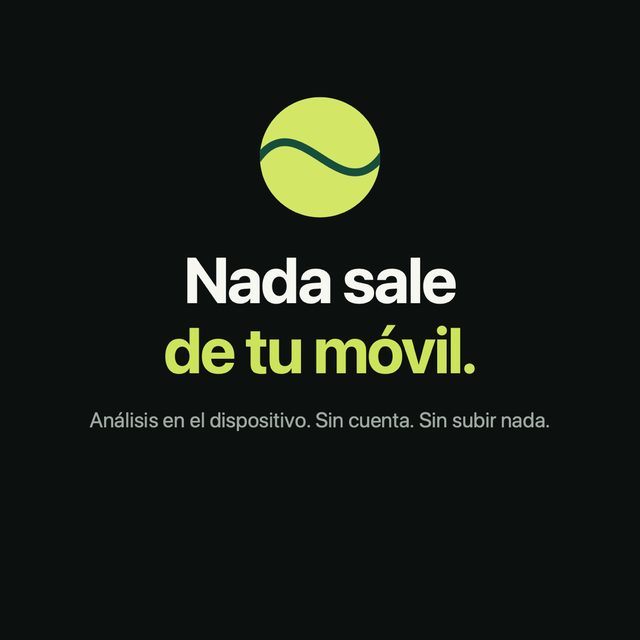

Cómo funciona
Tres pasos, sin editar
En la mayoría de las grabaciones hay más espera que juego. RallyOnly se queda con el juego.
Graba como siempre
Pon el móvil detrás de la línea de fondo, con toda la pista en el encuadre, y graba con la app Cámara.
Elige el vídeo
Un modelo en tu dispositivo detecta el inicio y el final de los puntos. Puedes elegir varias grabaciones a la vez.
Mira, recorta, comparte
Reproduce el partido condensado o el resumen al momento, revisa golpes fotograma a fotograma, añade el marcador y exporta en 16:9, 9:16 o 1:1.
Qué obtienes
El partido que sí vas a volver a ver
El partido condensado
Todos los puntos, sin las esperas de entre medias.
Un resumen de dos minutos
Tus mejores puntos, elegidos y montados sin cortar antes de que acabe el punto, listos para enviar.
Todos los puntos ordenados
Desliza para cambiar de punto, marca los que quieras para tu resumen y revisa tus saques en su propia lista.
Marcador en el vídeo
Cambia cualquier punto a Marcador y toca quién ganó cada punto, o empieza desde donde quieras con Fijar marcador. Las exportaciones Pro lo muestran en el vídeo.
Rueda fotograma a fotograma
Gírala a la derecha del vídeo para revisar cada saque o golpe fotograma a fotograma.
Hecho para compartir
Exporta en 16:9, 9:16 o 1:1 — en un solo vídeo o un archivo por punto, con portada opcional.
Por qué la eligen
Tus vídeos son tuyos
- Nada sale de tu móvilSin subidas, sin cuenta, sin esperar a ningún servidor.
- Conserva el originalLas versiones sin guardar pueden depender del vídeo original. Guarda o exporta los clips que quieras conservar.
- La app nunca te hace perder un partidoNo graba, así que un fallo no te puede costar un set. Grabas con la app Cámara.
- Lo que haces es tuyoSi dejas de pagar, no se te quita nada de lo que exportaste o guardaste.

Comparativa
¿Buscas una alternativa a SwingVision?
SwingVision hace muchas cosas: canta bolas, mide la velocidad, saca estadísticas y lleva el marcador con el Apple Watch. Mucha gente la usa sobre todo para una: quitar el tiempo entre puntos. Si es tu caso, RallyOnly hace solo esa parte, por menos.
| RallyOnly | SwingVision | |
|---|---|---|
| Quita tiempos muertos, resumen | Sí | Sí |
| Marcador en el vídeo | Sí (exportaciones Pro) | Sí |
| Canta bolas, velocidad, estadísticas | No | Sí |
| Graba dentro de la app | No: grabas con la app Cámara | Sí |
| Versión gratis | 4 partidos al mes, todas las funciones, exportaciones con marca de agua | Limitada |
| Planes de pago (España) | 5,99 €/mes o 44,99 €/año | Desde 17,99 €/mes o 99,99 €/año |
| Android | No | No |
Precios del App Store de España a 21 de noviembre de 2026; cambian según el país y pueden variar. SwingVision es una marca de SwingVision, Inc. RallyOnly es una app independiente y no tiene relación con ella.
Consejos para grabar
Para que el corte salga limpio
- Detrás de la línea de fondoUnos metros atrás, con los dos jugadores y toda la pista en el encuadre.
- Lo más alto posibleUn poste de la valla o una bolsa sobre un banco es mejor que el suelo.
- Nunca desde el lateral de la redLos jugadores que pasan por delante del objetivo parecen juego para cualquier cámara.
- Horizontal o verticalLas dos valen; en horizontal cabe mejor la pista.
Preguntas
Antes de probarla
¿Se sube mi vídeo a algún sitio?
No. RallyOnly analiza el vídeo en tu dispositivo, sin subirlo y sin pedir una cuenta. Lee la política de privacidad (en inglés).
¿Cuánto tarda?
Depende del dispositivo, la duración y el formato. Mantén la app abierta durante el análisis.
¿Cómo añado el marcador al vídeo?
Cambia cualquier punto a modo Marcador y toca quién ganó cada punto, o empieza desde cualquier punto con Fijar marcador. Las exportaciones Pro muestran el marcador sobre el vídeo.
¿Y si corta mal un punto?
Abre el punto y mueve el inicio o el final, de uno en uno o de tres en tres segundos, o gira la rueda fotograma a fotograma a la derecha del vídeo para revisar cada golpe. Si nos cuentas qué pasó, nos ayudas: rallyonly.feedback@gmail.com.
¿Sirve con vídeos de GoPro u otras cámaras?
Sí. Puedes usar Fotos. La versión 1.40 añade la importación desde Archivos y la selección de archivos en el Mac.
¿Es gratis?
Cuatro partidos nuevos al mes son gratis, con todas las funciones; lo que exportas gratis lleva una pequeña marca de agua. RallyOnly Pro quita el límite y la marca, y los nuevos suscriptores pueden empezar con una prueba gratuita.
¿Android?
No. RallyOnly se distribuye en el App Store de Apple.
Todos los puntos. Ninguna espera.
Tu próximo partido, montado en el móvil mientras recoges la bolsa.
Descargar en el App StoreGratis para 4 partidos al mes